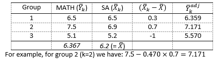

ANCOVA, which stands for Analysis of Covariance, is an extension of the concepts we’ve covered in bivariate linear regression and multiple regression. It is essentially a multiple regression with a categorical predictor and one or more continuous predictors. What’s “special” about this technique is that it is commonly used when the predictor of interest is that categorical variable, and the continuous predictor(s) are so-called “covariates”: predictors that are only included to improve our estimate of the effect of the categorical predictor of interest.
You will often see this technique used to analyze data from experiments or “natural experiments”, where participants self-select into a treatment group.
While ANCOVA is a useful technique, it comes with some serious pitfalls: any time control variables are used, we are making assumptions about causality. If these assumptions are incorrect, our estimates of the effect of interest will be (severely) biased.
21.0.1 Covariates and Their Role
Covariates are variables that have a relationship with the dependent variable but are not the primary focus of the study. They are often referred to as control variables, as they help control for unwanted variability and improve the precision of the analysis. Examples of common covariates include age, gender, education level, or any other variables that might influence the dependent variable.
In terms of causality, it’s crucial to consider the relationships between covariates, predictors, and the outcome variable. Control variables should ideally be confounders – variables that influence both the predictor of interest and the outcome. It’s essential to avoid controlling for colliders, which are variables caused by both the predictor and the outcome. A thorough understanding of causal relationships is crucial for proper interpretation.
One reason why researchers use control variables in ANCOVA is because they reduce the residual variance in the outcome variable, which in turn increases the power to detect the effect of the predictor of interest. Another reason to use covariates is when the goal is making causal inferences, especially in quasi-experimental designs. The proper selection of covariates that enable causal inference requires careful consideration and is beyond the scope of this course.
21.0.2 Good, Neutral, and Bad Controls
Covariates fall into different categories based on their relationship with the predictor of interest and the outcome. An example of a good control is a confounder: a variable that causes both the predictor and the outcome. These need to be controlled to avoid spurious relationships. An example of a neutral control is a covariate that is unrelated to the predictor but can reduce error variance in the outcome, thereby increasing statistical power. Bad controls, on the other hand, can introduce biases, such as collider bias (controlling for an outcome of predictor and outcome), case control bias (controlling for an outcome of the outcome), or overcontrol bias (controlling for a mediator of the effect of the focal predictor on the outcome).
One crucial insight is that in randomized controlled experiments, the random assignment of participants to different groups breaks the relationship between confounders and the treatment variable. This makes control variables related to the confounders unnecessary. Controlling for them could even introduce bias into the analysis.
21.0.3 Calculating Adjusted Means
Adjusting for covariates involves calculating adjusted means – the means that groups would have had if they scored equally on the covariate. There are two ways to mathematically calculate the adjusted means. One way is to fill in the regression equation for the desired value of the covariate.
The other way is to calculate the adjusted means from the group means:
\(\bar{Y}_g^{adj}\): Adjusted mean of the outcome for group g
\(\bar{Y}_g\): Unadjusted mean of the outcome for group g
\(b\): Regression coefficient of the covariate
\(\bar{X}_g\): Group mean of covariate X
\(\bar{X}\): Overall mean of covariate X
In sum, ANCOVA is a different name for regression with a categorical predictor of interest, and continuous predictor(s) that are included to improve our estimate of the effect of the predictor of interest. ANCOVA can enhance statistical power and help make more accurate (potentiall causal) inferences. However, the careful selection of covariates and an understanding of causal relationships are paramount to its proper implementation and interpretation.
21.1 Lecture
21.2 Formative Test
A formative test helps you assess your progress in the course, and helps you address any blind spots in your understanding of the material. If you get a question wrong, you will receive a hint on how to improve your understanding of the material.
Complete the formative test ideally after you’ve seen the lecture, but before the lecture meeting in which we can discuss any topics that need more attention
Question 1
What is a valid reason for using covariates in ANCOVA?
Question 2
What is an example of a ‘good control’ variable in ANCOVA?
Question 3
Which of the following is an example of a ‘bad control’ variable in ANCOVA?
Question 4
In a randomized controlled experiment, are there benefits to controling for any observed differences between the two experimental groups?
Question 5
What is the purpose of calculating adjusted means in ANCOVA?
Question 6
Which of the following is a key factor in choosing appropriate covariates for ANCOVA?
Question 7
What is the distinguishing feature of ANCOVA relative to multiple regression?
Question 8
In which of these situations should you avoid controlling a particular covariate in ANCOVA?
Question 9
An ANCOVA model compares statistics grades for two classes of students, controlling for number of hours studied per week. The regression model is \(\text{Grade} = -1.27 + 0.50*D_{class2} + .30*Hours\). The unadjusted mean grades are 5.2 for class 1 and 7.3 for class 2. The mean hours studied were 21.56 for class 1 and 30.23 for class 2. The overall mean hours studied was 25.90. What are the adjusted means?
Question 1
Covariates can be used in ANCOVA to reduce error variance caused by factors other than the predictor of interest.
Question 2
A confounder is a ‘good control’ variable in ANCOVA – a variable that influences both the predictor of interest and the outcome.
Question 3
A variable that is affected by the outcome is a ‘bad control’ variable in ANCOVA and can introduce biases.
Question 4
In a randomized controlled experiment, random assignment breaks the relationships between confounders and the treatment. Therefore, controlling for covariates related to the predictor is unnecessary.
Question 5
Adjusted means in ANCOVA are controlled for the effects of covariates, allowing us to understand how groups would differ on the outcome variable if they had equal scores on the covariate.
Question 6
Causal relationships are crucial when selecting covariates for ANCOVA. It’s important to choose covariates that are related to the outcome and predictor in a meaningful way.
Question 7
ANCOVA is one example of the broader category of models known as multiple regression; it is characterized by having a categorical predictor of interest and (continuous) covariates.
Question 8
Avoid controlling for covariates that are mediators, as controlling for mediators could lead to overcontrol bias and distort the relationships between the predictor and outcome.
Question 9
Use the formula \(\bar{Y}_g^{adj} = \bar{Y}_g - b(\bar{X}_g-\bar{X})\)
21.3 Tutorial
21.4 Bivariate Regression (RECAP)
Researchers are interested in the relationship between age and depression.
They hypothesized that older people are more vulnerable to depressive thoughts than younger people.
To test their research hypothesis, they collected data in a random sample of 164 persons from the general population. Open the dataset HADShealthyGroup.sav.
Run a linear regression analysis using age as the independent variable and depression as the dependent variable.
Proceed as follows:
Navigate to Analyze > Regression > Linear
Select the correct dependent and independent variable.
Paste and run the syntax.
How much of the total variance in Depression is explained by Age?
What can you say about the effect size? Would you say it’s a lot?
To me, 2% of explained variance does not seem like a lot. There are probably better predictors of depression (i.e., predictors that explain more of the variance in depression).
True or false: The explained variance is significant at the 10% level.
To conclude anything about the significance of the proportion explain variance of this model, we can look at the ANOVA table or ask SPSS to show the R2-change. This shows us that the explained variance in this model is not significant compared to an empty model (i.e. including no predictors), F(1,140) = 2.836, p = .094.
Write down the estimated regression line using the unstandardized coefficients.
Y’= + *Age
How can we interpret the constant?
Consult the table with the coefficients again
True or false: We can conclude from this table that the effect of age is significant at the 10% level.
To conclude whether the effect of Age on Depression is significant, we look at the t-test for the estimated coefficient.
We should conclude that the effect of Age on Depression is significant when using \(\alpha\)=.10, t(140) = 1.684, p = .094.
One of the assumptions of bivariate regression analysis is that the relationship between the independent and dependent variable is linear.
State in your own words what this assumption entails.
The assumption of a linear relationship entails that the relationship between the variables can be described with a straight line.
How would you evaluate the assumption of linearity graphically? Do it for the data at hand.
True or false: The relationship is linear.
If the assumption is not met, speculate about other possible relationships between age and depression.
The scatter plot does not have the shape of a cigar, so it does not unambiguously suggest a linear relationship. Thus, you may doubt whether the relationship between age and depression is best described by a linear model. Perhaps the relationship is quadratic. Especially persons in middle ages may be vulnerable to depressive thoughts. Next to the plot, you find both the estimated linear trend and a non-linear trend. It seems that the quadratic curve fits better with the data. Moreover, the quadratic model explains 6% of the variance, whereas the linear model only 2%.
Run a regression analysis using Age as the independent variable and Anxiety as the dependent variable.
Summarize the results.
Include in your answer the proportion of explained variance (R-square), a description of the effect based on the estimated regression coefficients, and evaluate the significance of the effect of age on anxiety.
The proportion explained variance in Anxiety by Age is .071. The explained variance in this model is not significant compared to an empty model (i.e. including no predictors), F(1,140) = 0.710, p = .401.
The effect is Age on Anxiety is negative (\(\beta\) = -0.013), meaning that anxiety decreases with age. However, the effect of Age on Anxiety is not significant when using \(\alpha\)=.05, t(140) = -0.842, p = .401.
21.5 ANOVA (RECAP)
Consider the following hypothetical research situation…
Researchers are interested in effects of stereotyping on cognitive performance. For their research they performed a quasi-experiment. They selected three schools and asked girls from eight grade to do a math test. However, the teacher in School A says that boys do particularly well on the test (i.e., negative stereotyping for girls). In School B the teachers says that girls do particularly well on the test (i.e., positive stereotyping for girls). In the third school, the teacher gives gender-neutral information (control group).
Afterwards the researchers compare the average math grades across the three groups. Because the schools may also differ in the student population, researchers also measured scholastic aptitude and use that as a covariate in the analysis.
In your own words, explain what a covariate is and give two examples of covariates that should/can be included in neuro-psychological research.
Covariates are “nuissance” variables that we are not directly interested in, but that allow us to better estimate the effect of another variable of interest.
This is related to causal inference.
We must thus justify our covariates by reference to their putative causal role with relation to our predictor and outcome.
A covariate that causes both our predictor and our outcome is a confounder, and should be controlled for. This sometimes happens in “natural experiments”, where the factor is not randomly assigned to participants.
A covariate that causes our outcome, but is unrelated to our predictor, can be controlled for to reduce error variance in the outcome and increase statistical power of the effect of interest. This typically happens in randomized controlled experiments, but it may also happen in natural experiments.
As a counter-example: A variable that is caused by our predictor and our outcome is a collider, and should never be controlled for! This will bias the effect of our predictor.
Mention two often-used covariates in research.
Gender and Age are two covariates that are often used in research.
Let’s start analyzing the math scores using an ANOVA, thus ignoring any covariates for now.
Compute the means across the three groups (Analyze à Compare means à Means.
Select MATH for the dependent list and STEREO as the independent.
Paste and run the syntax.
Inspect the table that displays the mean differences between the groups.
What is the first impression of stereotyping that we have from the mean differences?
The table shows that no stereotyping results in the lowest mean score on the math test. Positive stereotyping results in the highest mean score, and negative stereotyping is in between.
Run an ANOVA: (Analyze -> general linear model -> univariate). Select MATH as the dependent variable and STEREO as fixed factor.
Write down the null and alternative hypothesis of the ANOVA, then check your answer.
True or false: The effect of stereotyping is significant (use \(\alpha\)=0.05).
Yes, the F-test for the effect of Stereotyping on Math performance is significant, F(2,27) = 5.614, p = .009. Hence, we reject H0.
We have convincing evidence that, also at the population level, the means differ.
In other words, we have convincing evidence that the mean differences in math performance are not the result of sampling fluctuations but reflect true differences due to the manipulation (i.e. stereotyping).
How large is the R-square?
How do you interpretat this value of the R-square?
The R2 is 0.294.
This means that 29.4% of the variance in Math performance is explained by the Stereotyping.
The R-square should be equal to:
Test whether there is an effect of stereotyping (regardless of whether it is positive or negative stereotyping).
True or false: The effect of stereotyping (regardless of whether it is positive or negative stereotyping) is significant.
Report Levene’s test, significance of the contrast that you tested, and an interpretation of the difference between the two means.
The Levene’s test is not significant (p = .805), so there is no evidence for violation of the assumption of homoscedasticity.
Test the mean math score for each experimental group against the control group; that is, you have to test two planned contrasts.
Are the means different when tested at an experiment-wise alpha of .05 and using a Bonferroni corrected alpha per test? Substantiate your answer.
The contrast is significant at \(\alpha\) = .05.
These results suggest that stereotyping (positive/negative) results in better math performance than non-stereotyping.
21.5.1 ANCOVA
The next step is to add scholastic aptitude as a covariate in our analysis.
In the lecture, we considered two situations in which ANCOVA is used; one in which the covariate was not related to the grouping variable, and one in which the covariate is associated.
Which situation do we have in this study? To answer the question, you need to ask for some additional statistics in SPSS.
We can check if the covariate is associated with the experimental factor by inspecting the means of the experimental groups on the covariate, or by running a one-way ANOVA.
The covariate is associated with the grouping variable, and thus mean differences in math between the three groups may be confounded by mean differences in scholastic aptitude between the three groups.
21.5.1.1 Assumption or not?
Some texts state that ANCOVA has an additional assumption, beyond those of multiple regression. This “extra assumption” is the assumption of “homogeneity in regression slopes”.
The assumption of homogeneity in regression slopes states that the within-group effect of the covariate is the same across groups. That is, the covariate does not interact with the grouping variable.
For example, in this assignment, the assumption would imply that the effect of scholastic aptitude is independent of the experimental condition.
But: ANCOVA is just a special name for multiple regression with a categorical predictor of interest and control variables that we’re not interested in (“nuissance variables”). If ANCOVA is multiple regression, then how can it have differen assumptions than multiple regression?
The answer is that ANCOVA does not have different assumptions, but if we were to allow for interaction between the factor and covariate, we would simply no longer call the resulting model an ANCOVA.
So instead of saying “ANCOVA has an assumption of homogeneity in regression slopes”, we could say: “it is conventional to call a model ANCOVA if it contains a factor and some control variables, but no interaction”. Of course we can add interaction terms in such a model - but then we just call it multiple regression with an interaction, not ANCOVA.
Omitting an interaction between the factor and the covariate means that we force the within-group effect of the covariate to be the same across levels of the factor. In this study, that means that we do not allow the effect of scholastic aptitude to depend on the experimental condition.
Before we carry out the actual ANCOVA, we can check whether this model is correctly specified, or whether we are missing a significant interaction. We can check whether there is a significant interaction effect using the following syntax:
UNIANOVA SA BY STEREO WITH MATH
/METHOD=SSTYPE(3)
/INTERCEPT=INCLUDE
/PRINT=DESCRIPTIVE PARAMETER HOMOGENEITY
/CRITERIA=ALPHA(.05)
/DESIGN=STEREO MATH MATH*STEREO.
Copy and run the syntax. Go to the table “Tests of Between-Subjects Effects”. Take a look at the row STEREO*MATH.
True or false: There is a significant interaction effect.
If there is a significant interaction effect, what do we do?
Remember we can check for a significant interaction effect for two reasons:
Our hypothesis is about the interaction effect
As an assumption check for correct model specification (i.e., we’re interested in main effects, but we want to make sure that we’re not ignoring an interaction when we do). This is similar to checking for linearity.
In the first case, we should not be conducting ANCOVA at all; we should start with multiple regression with interaction, because the interaction effect is our effect of interest.
In the second case, we can do two things: We can change our analysis based on the results of the “assumption check” - but such data-dependent decisions increase the risk of overfitting and Type I errors. Alternatively, we can just report the results of our planned ANCOVA analysis, but mention in the discussion that we observed a significant interaction, which means that the model may have been misspecified. We can also report results from both models, and see if/how the conclusions change if we allow for interaction (this is called a sensitivity analysis).
21.5.1.2 Back to ANCOVA
Let’s run an ANCOVA, proceed as follows:
Navigate to Analyze > General linear model ? Univariate
Select MATH as the dependent variable, STEREO as fixed factor, and SA as the covariate.
Also, via OPTIONS ask for the Parameter estimates. Paste and run the syntax.
Consider the Tests of Between Subjects Effects table (henceforth referred to as the “ANCOVA table”) and the FF-test for the grouping factor (STEREO).
What’s the p-value for the overall test of model fit?
What conclusions can be drawn from the F-test?
The F-test is a test of the effect of Stereotyping on Math performance controlled for Scholastic aptitude. Conceptually, it tests whether differences in the adjusted means in Math performance are significant. Adjusted means are the means we would expect if the group had an average level of Scholastic aptitude.
In other words, it tests the differences in the hypothetical situation we would have had three groups that had exactly the same level of Scholastic aptitude.
The F-test is not significant, F(2,26) = 2.333, p = .117, which means that, controlled for Scholastic aptitude, we don’t have convincing evidence that Stereotyping had an effect on Match performance.
Compare the results ANOVA and ANCOVA. What important difference do we see and how would you explain those?
The ANOVA suggested a significant effect, whereas once controlled for Scholastic aptitude (ANCOVA) the effect was no longer significant.
Thus, the mean differences between the experimental groups we saw before were indeed confounded with differences in Scholastic aptitude!
Consult the table parameter estimates.
What is the regression slope for scholastic aptitude?
Explain the meaning of estimated parameter for scholastic aptitude.
The parameter estimate for Scholastic aptitude is 0.470. The effect is significant when using \(\alpha\) = .05.
It is the pooled within-group regression effect of Scholastic aptitude on Math performance, controlled for Stereotyping.
Thus, if Scholastic aptitude increases by one unit, the predicted Math score increases by .470 units, while controlling for Stereotyping.
Based on the Parameters Estimates and the group-specific means, compute the adjusted group means (for each of the groups!) on MATH for an average scholastic aptitude.
What is the adjusted group mean for the group that received the Negative Stereotype manipulation?
To use the formula, you need to know the group means on MATH (you computed them before), you have to know the group means and overall mean SA (you can compute them via means), and the regression effect which is given in the table with parameter estimates.
Check your adjusted means against this answer model:

Rerun the ANCOVA. Now via OPTIONS also ask for the estimated means. You do so by selecting stereo in the list of Display Means for (at the top of the menu). Look in the table Estimated Marginal Means and verify your answer to the previous question.
Write down in your own words – and as precise as possible – the meaning of adjusted means.
The estimated marginal means (i.e., the adjusted means) are the group means if all groups would’ve had an average of 6.20 on the covariate.
Finally, we want to look at several effect size estimates.
How much of the variance in Math do SA and STEREO explain?
Controlled for SA, how much of the remaining variance in Math does STEREO explain? Use the formula mentioned in the lecture slides to calculate the partial \(\eta^2\):
Verify your answer by running the ANCOVA again. Now, in options, select the box Estimates if effect size.
True or false: SPSS reports the same partial η2.
Could you summarize your findings of the ANCOVA in a few brief sentences?
Mention the significance tests, (un)adjusted means and the effect size estimates.